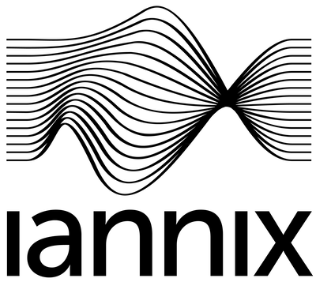

| Introduction | Objets fondamentaux |
Messages émis et reçus |
Interface graphique |
Scripts | Référence | Index des fonctions |

Bienvenue et merci d'avoir téléchargé IanniX !
IanniX est un séquenceur graphique open-source, inspiré des travaux de Iannis Xenakis, destiné à la création numérique. IanniX synchronise via Open Sound Control (OSC) des événements et courbes vers votre environnement temps-réel (PureData, C-Sound, SuperCollider, openFramework, Processing, vvvv, Live, Max/MSP/Jitter… et beaucoup d’autres dans notre section links section)!
N’hésitez pas à vous inscrire sur notre forum. Poster vos problèmes ou astuces pour faire vivre notre communauté !